Pakari Wawakuna
Hunti Yachay Pacha. Nuestros niños y niñas crecen con amor. Acompañamos su desarrollo desde el inicio.
Proyecto enfocado en educación inicial, estimulación temprana, inclusión, participación familiar e identidad cultural.
Ver información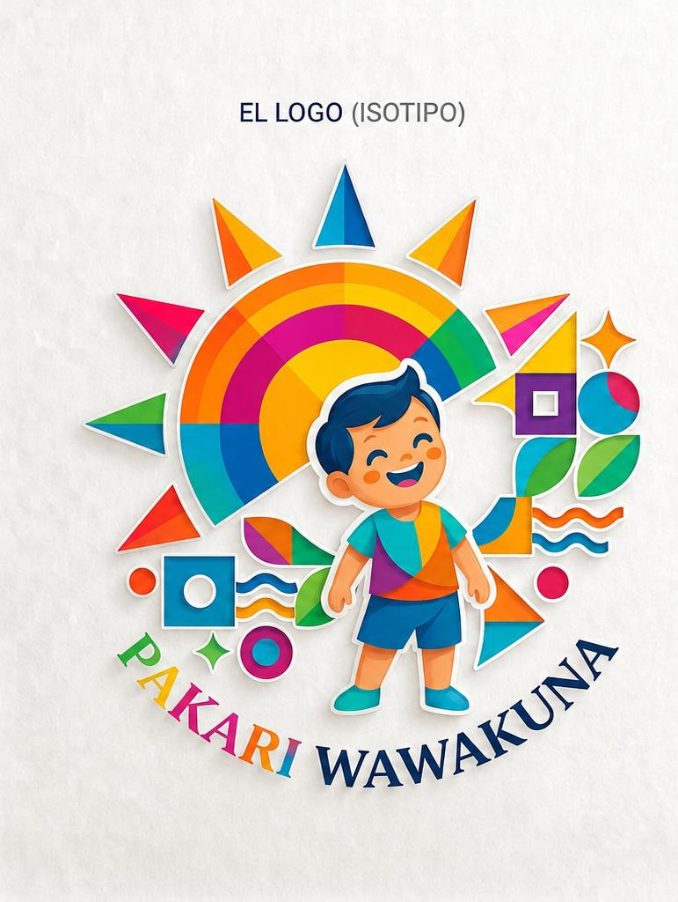
Propuesta pedagógica
El Centro Infantil de Desarrollo y Estimulación Temprana Intercultural “Pakari Wawakuna” se fundamenta en el Currículo de Educación Inicial del Ecuador.
Promueve el desarrollo integral de niños y niñas de 3 meses a 5 años mediante el juego, la estimulación temprana y la participación familiar, en un ambiente inclusivo y seguro que respeta las necesidades y ritmos de aprendizaje de cada niño.
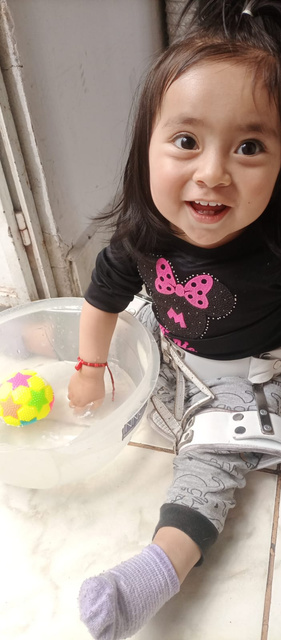
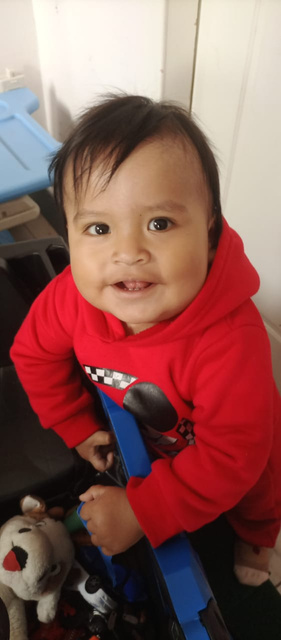
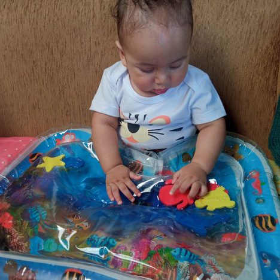
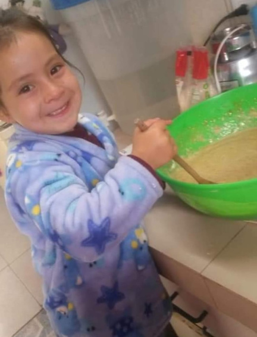
Misión
Brindar una educación inicial integral, comunitaria e intercultural a niños y niñas de 3 meses a 5 años de la parroquia Calderón, promoviendo el desarrollo cognitivo, emocional, físico y social.
Visión
Ser un centro reconocido en Calderón por ofrecer educación de calidad con pertinencia cultural, participación familiar y compromiso con el cuidado de la Pacha Mama.
Valores
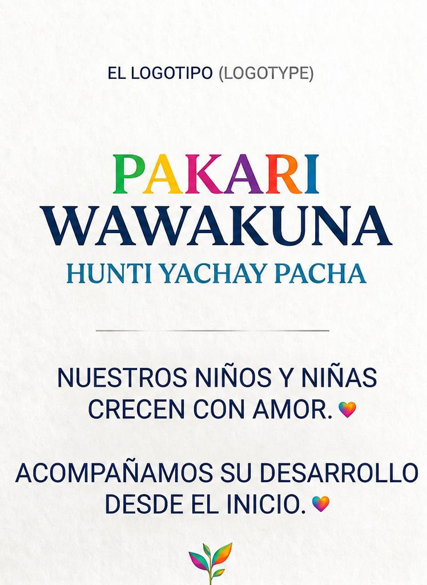
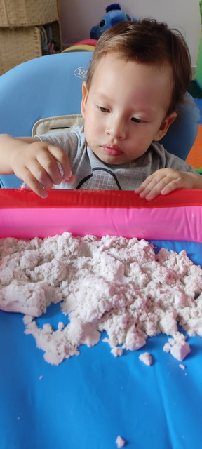
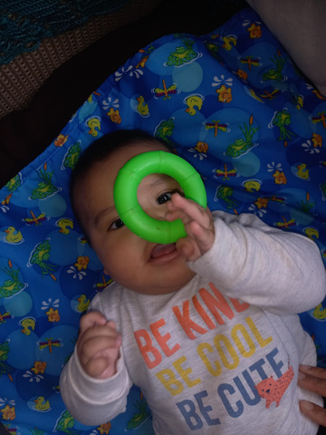
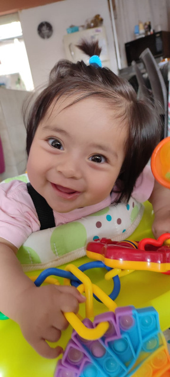
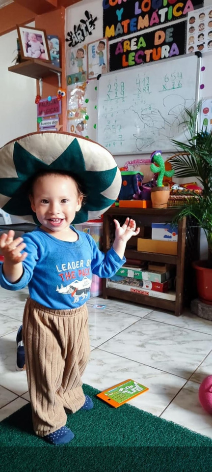
Sistematización del acuerdo de apertura - MINEDUC
El proyecto busca brindar educación inicial de calidad, basada en la normativa del Ministerio de Educación, orientada al desarrollo integral de niños y niñas en un entorno seguro, inclusivo e intercultural.
Requisitos principales
- Solicitud de creación ante la Dirección Distrital de Educación.
- Propuesta pedagógica basada en el Currículo de Educación Inicial del Ecuador.
- Cumplimiento de requisitos legales y administrativos.
- Infraestructura adecuada, segura y accesible.
- Justificación del nombre institucional e inclusión educativa.
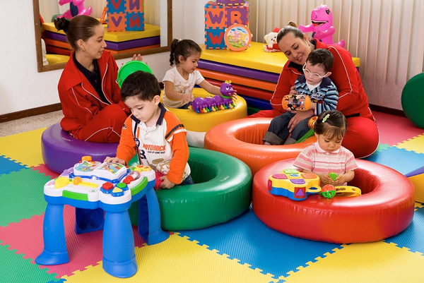
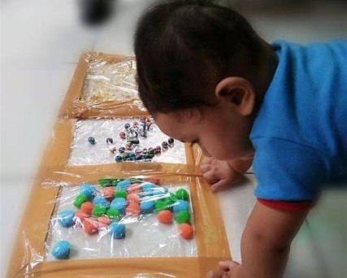
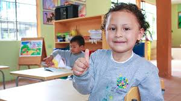
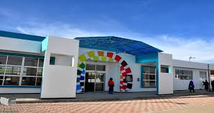
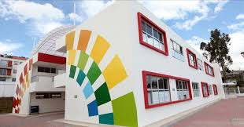
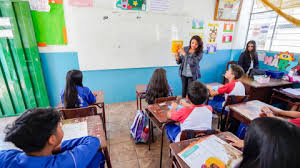
Estatuto institucional
El centro contará con un estatuto que establece su identificación, ubicación, oferta de Educación Inicial y estimulación temprana, además de la misión, visión, valores, estructura administrativa y académica.
También incluirá normas para admisión, matrícula, planificación curricular, evaluación y actividades institucionales, cumpliendo con la Constitución, la LOEI y las disposiciones del Ministerio de Educación.
Galería del proyecto
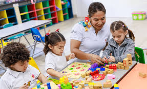
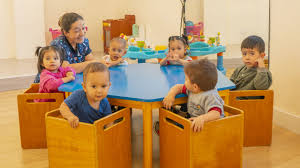
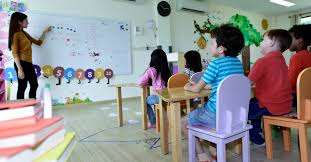
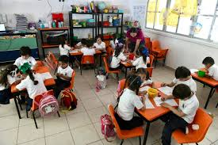
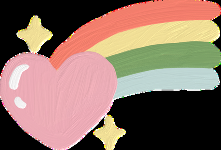
Conclusión
La creación y funcionamiento de un Centro de Educación Inicial requiere cumplir requisitos legales, administrativos, pedagógicos y de infraestructura. Estos garantizan una educación segura, inclusiva y de calidad para el desarrollo integral de los niños y niñas.